홈에서 포털이 하려는 일 보기
브라우저에 연 포털의 홈에서 시작합니다. 먼저 왼쪽 아래 서비스 16/16을 봅니다. 앞뒤 숫자가 같으면 시스템의 서비스가 모두 켜진 것입니다. 포털을 열면 늘 이것부터 봅니다.
맨 위 한 줄 「지식을 넣으면 AI가 그 지식으로 판단하고, 사람이 승인한 조치만 실행됩니다.」가 이 포털이 하려는 일입니다. 아래 네 칸 1 지식 넣기, 2 고장 내기, 3 판단과 승인, 4 결과 보기를 이번 실습에서 차례로 지나갑니다.
확인: 서비스의 앞뒤 숫자가 같고, 4 결과 보기가 0건 처리 완료입니다.

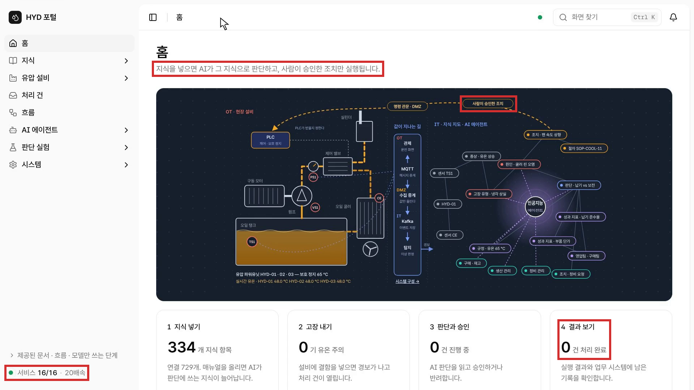
쿨러 팬 매뉴얼 올리기
AI가 고장을 판단하려면 이 설비가 어떻게 고장 나고 어떻게 고치는지 알아야 합니다. 그래서 매뉴얼부터 AI의 지식으로 넣습니다. 홈을 조금 내려 첫 칸 1 지식 넣기 아래 문서 등록 →을 누르세요.

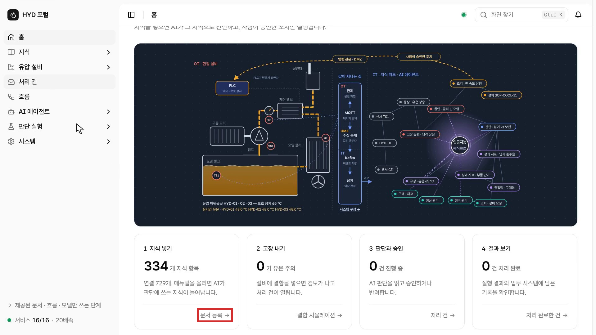
지식 › 문서 등록 화면이 열립니다. 위의 단계 줄 올리기, AI 추출, 검토, 적재가 문서가 지식이 되는 차례입니다. 문서를 올리면 AI가 필요한 내용을 뽑아 오고, 사람이 그것을 검토한 다음, AI가 판단할 때 쓰는 지식으로 넣습니다. 이렇게 넣는 것을 적재라고 합니다.
자기 파일은 내 파일 올리기로 올리고, 이 설비의 매뉴얼은 아래 제공 문서에서 고르기 목록에 미리 들어 있습니다. 뒤에서 고장을 낼 곳이 쿨러이므로 목록 첫 줄 유압 파워유닛 쿨러 팬 정비 매뉴얼을 누르세요. 줄을 누르면 문서가 올라갑니다.

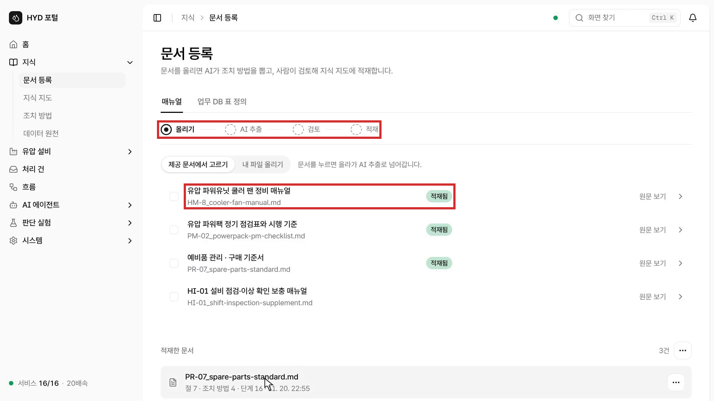
단계 줄이 AI 추출로 넘어가고 이미 적재된 문서 · HM-8_cooler-fan-manual.md가 나옵니다. 이미 적재된 문서이지만, 지식이 되는 과정을 따라가 보려고 한 번 더 뽑습니다. AI 추출 시작을 누르세요.

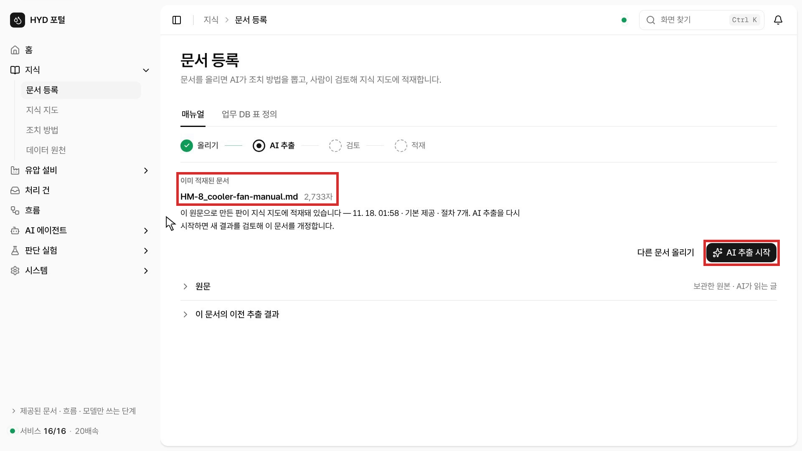
AI가 뽑아 온 고장 · 원인 · 조치 보기
문서 이름 아래로 줄 셋이 하나씩 지나가고, 몇 초 뒤 조치 방법 7개 · 지식 후보 17개 · 매뉴얼 절 8개를 찾았습니다가 나옵니다. 그 아래 접힌 참고, 추출 과정 보기, 원문은 열지 않아도 됩니다.
화면을 내리면 처음 보이는 목록이 AI가 뽑은 조치 일곱 개이고, 줄마다 어느 고장에 쓰는 조치인지(쿨러 냉각 성능 상실)가 붙어 있습니다. 고장과 원인을 보려면 목록 위 칸 가운데 지식 후보 17을 누르세요.

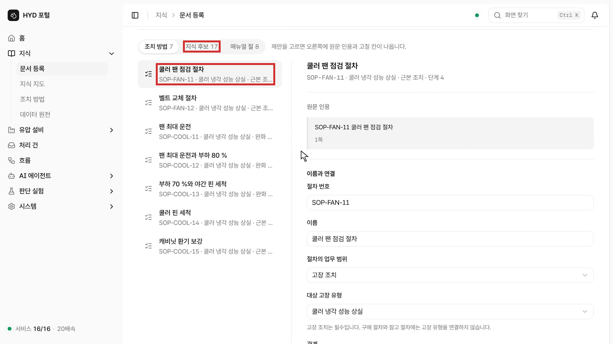
맨 위 줄 쿨러 냉각 성능 상실이 고장 유형이고, 밑의 작은 글씨 유온 상승, 냉각 효율 저하는 이 고장일 때 눈에 보이는 이상인 증상입니다. 그 아래 세 줄 쿨러 핀 오염, 주변 온도 상승, 팬 구동 불량은 이 고장을 일으킬 수 있는 원인입니다.
확인: 고장 유형 한 줄 아래에 원인 세 줄이 있습니다.

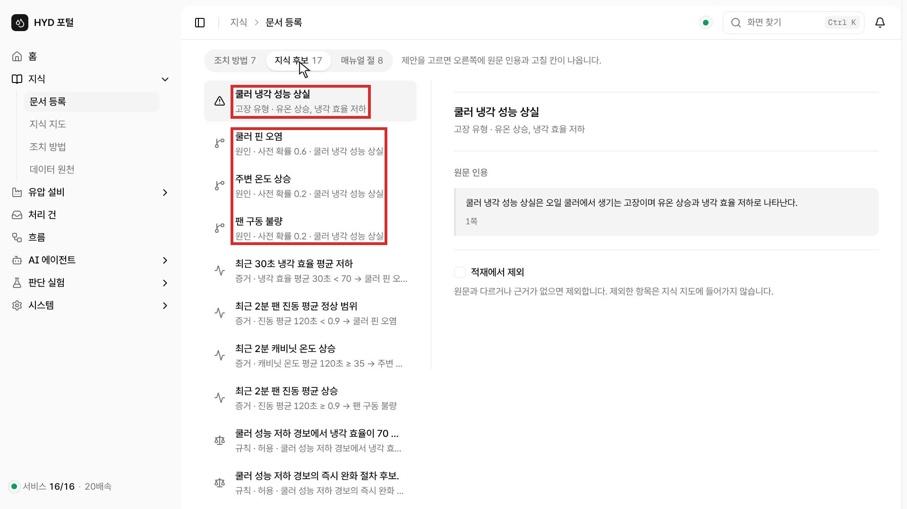
원문과 맞춰 검토하고 적재하기
오른쪽 원문 인용에는 지금 고른 줄이 매뉴얼의 어느 문장에서 나왔는지가 붙어 있습니다. 검토는 줄마다 이 원문 한 문장과 맞는지 보는 일입니다.
한 줄을 해 봅니다. 왼쪽 목록을 조금 내려 팬 진동 줄 둘 가운데 위쪽 최근 2분 팬 진동 평균 정상 범위를 누르세요. 쿨러 핀 오염이 원인인지 가려낼 때 보는 값입니다. 오른쪽 위 「진동 평균 120초 < 0.9 → 쿨러 핀 오염」은 2분(120초) 동안 팬 진동 평균이 0.9보다 낮으면, 다시 말해 팬이 멀쩡히 돌고 있으면 쿨러 핀 오염으로 본다는 뜻입니다.
확인: 오른쪽 원문 인용에 「… 최근 2분 팬 진동 VS1 평균이 0.9 mm/s 미만(팬은 정상)이면 핀 오염으로 판정한다. …」가 나옵니다. 왼쪽 줄과 같은 말이므로 이 줄은 맞게 뽑혔습니다.

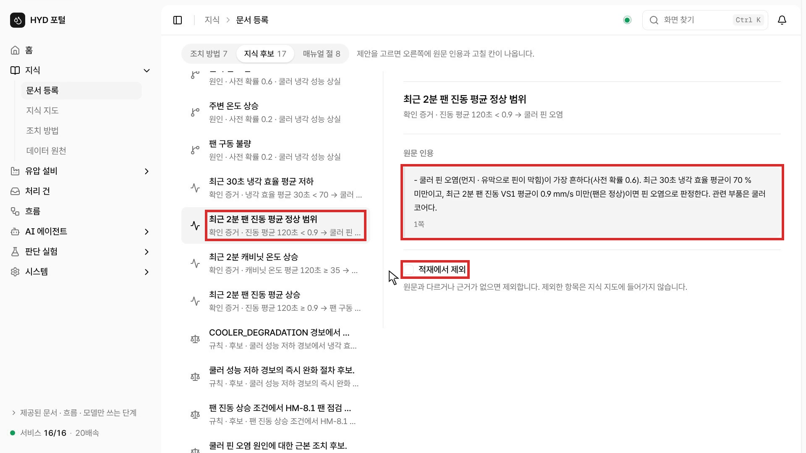
원문과 다른 줄이 보이면 오른쪽 적재에서 제외에 체크해 그 줄만 빼고 적재합니다. 이 줄은 원문과 맞으므로 이번에는 비워 둡니다. 직접 문서를 넣을 때는 나머지 줄도 이렇게 하나씩 원문과 맞춰 봅니다.
맨 아래로 내려 원문 · 단계 · 고장 유형 · 관계를 검토했습니다.에 체크하고 검토한 내용 적재를 누르세요.

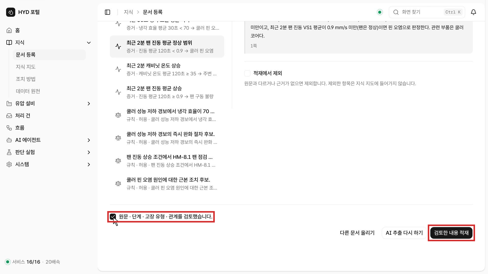
확인: 지식 지도에 적재했습니다가 나오고, 위 단계 줄의 네 칸에 모두 체크가 붙습니다.

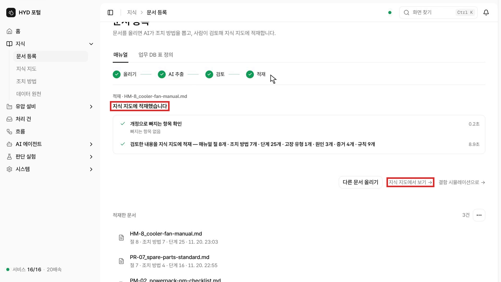
지식 지도에서 경보부터 조치까지 이어진 길 보기
뽑아 넣은 지식이 서로 어떻게 이어졌는지 봅니다. 적재 결과 아래의 지식 지도에서 보기 →를 누르세요.
지식 › 지식 지도가 열립니다. 점 하나가 지식 하나이고, 선은 둘이 이어져 있다는 표시입니다. 위 고르기 칸 이상 패턴 경로 · 전체를 눌러 쿨러 성능 저하를 고르세요. 이상 패턴은 경보의 종류이고, 고르면 그 경보에서 출발하는 길만 밝게 남습니다.

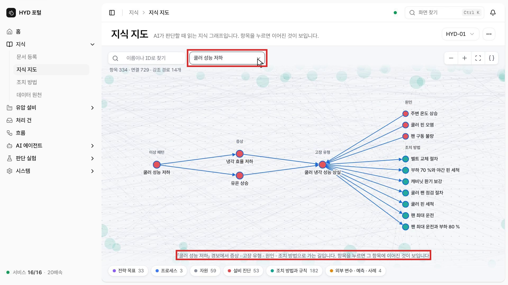
왼쪽부터 읽습니다. 경보 쿨러 성능 저하에서 증상 냉각 효율 저하와 유온 상승으로, 다시 문서 등록에서 본 고장 유형 쿨러 냉각 성능 상실로 이어지고, 그 고장 유형에 원인 셋과 조치 방법 일곱이 붙어 있습니다. 경보가 오면 AI는 이 길을 따라가 지금 상황에 맞는 원인과 조치를 고릅니다.
확인: 이상 패턴에서 증상, 고장 유형을 거쳐 원인 셋과 조치 방법 일곱까지 한 갈래 길로 이어져 있습니다.
결함 시뮬레이션에서 쿨러에 고장 내기
왼쪽 메뉴 유압 설비를 눌러 펼치고 결함 시뮬레이션을 누르세요. 컴퓨터 안에서 도는 가상 설비 세 대에 일부러 고장을 내 보는 곳입니다. 카드 아래 안내대로, 여기서 누른 고장은 명령 관문을 거치지 않고 설비에 바로 들어갑니다.
첫 카드 HYD-01은 운전 중이고 유온 48.0 °C · 쿨러 성능 100 %로 잘 돌고 있습니다. 옆의 두 대는 정기 정비나 예비품 구매 같은 회사 일을 해 보는 칸이라, 빨간 표시가 붙어 있어도 이번에는 쓰지 않습니다. 첫 카드의 쿨러 열화 주입을 누르세요. 쿨러가 점점 나빠지는 고장이 들어갑니다.

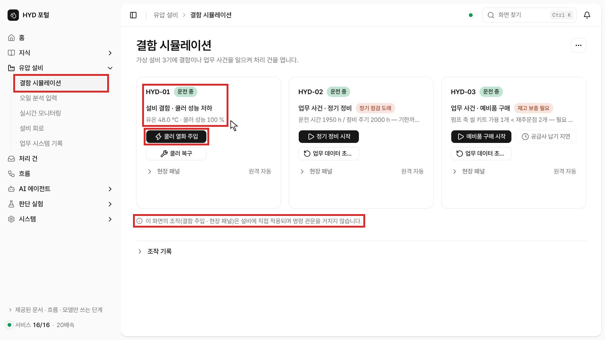
카드 아래에 과정 상자가 열리고 결함이 들어갔습니다 — 쿨러 성능이 떨어지기 시작했습니다가 뜹니다. 그 아래 유온이 오르는 중 줄에서 유온이 경보 조건 55 °C 쪽으로 조금씩 오릅니다.
유온이 55 °C를 넘어도 경보는 바로 나지 않고, 그 상태가 이어지는지 지켜본 뒤에 납니다. 화면을 둔 채 기다리면 됩니다. 강사 화면에서는 누른 뒤 40초쯤 지나 유온이 경보 조건을 넘었고, 몇 초 뒤 처리 건이 열렸습니다.

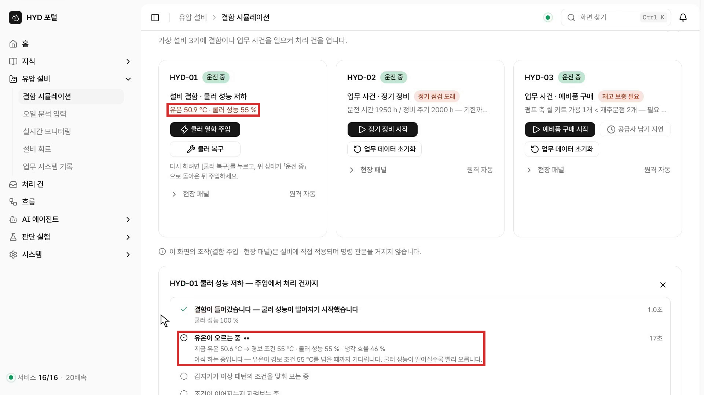
확인: 과정 상자에 경보가 났습니다와 처리 건이 열렸습니다가 차례로 붙고, 카드의 상태가 이상 징후를 거쳐 경보 발생으로 바뀌며, 왼쪽 메뉴 처리 건 옆에 1이 붙습니다.
포털에서는 경보 한 건으로 열린 사건 한 건을 처리 건이라고 부릅니다. HYD-01 카드 아래쪽의 처리 건에서 보기 →를 누르세요.

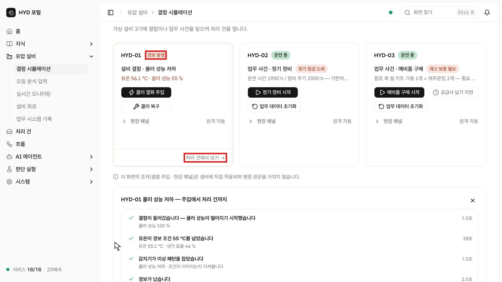
처리 건에서 AI 판단과 근거 읽기
처리 건 화면 왼쪽 내가 할 일에 방금 생긴 냉각 긴급 대응 HYD-01이 올라와 있고, 오른쪽에 그 내용이 펼쳐져 있습니다. 맨 위 카드 내가 할 일 · 승인이 지금 할 일입니다. AI 에이전트가 원인을 진단하고 조치까지 골라 사람의 승인을 기다리고 있습니다. 카드 머리의 「지연 알림까지 10분」은 승인이 늦으면 알림이 가는 시간입니다. 그 시간이 지나도 승인할 수 있으니 근거를 다 읽고 정해도 됩니다.
카드 제목에 AI가 고른 조치가 있습니다. 강사 화면에서는 팬 최대 운전을 승인할까요?였습니다. 쿨러 팬을 가장 세게 돌려 기름을 식히는 조치입니다. 밑의 AI 판단 줄에는 원인을 쿨러 핀 오염으로 봤다고 적혀 있습니다. 왜 그렇게 봤는지 보려면 판단 근거 · 후보 비교 보기를 누르세요.

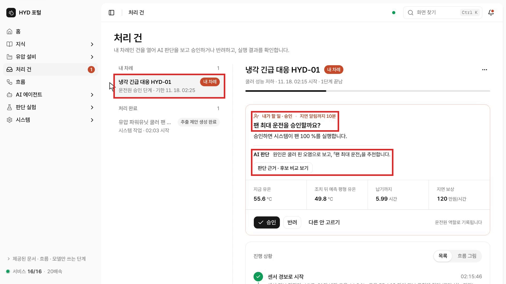
오른쪽에 원인 진단 · 냉각 조치 제안 판이 판단 탭으로 열립니다. 결론 밑 근거의 첫 줄은 원인 후보 셋 가운데 쿨러 핀 오염이 지금 값과 맞는다는 뜻이고, 둘째 줄과 셋째 줄이 그 까닭입니다. 둘째 줄이 문서 등록에서 원문과 맞춰 본 그 팬 진동 줄입니다.
밑의 후보 비교 4는 지도의 조치 일곱 가운데 이번 원인에 맞는 넷을 점수로 견준 표입니다. 강사 화면에서 쿨러 핀 세척은 맨 아래 4번이었습니다. 핀을 닦는 동안 설비를 세워야 해서 납기 손해가 커 뒤로 밀렸습니다.
확인: 근거 둘째 줄의 기준이 0.9 mm/s 미만으로 문서 등록에서 원문과 맞춰 본 값과 같고, 둘째 줄과 셋째 줄 끝이 맞음입니다.

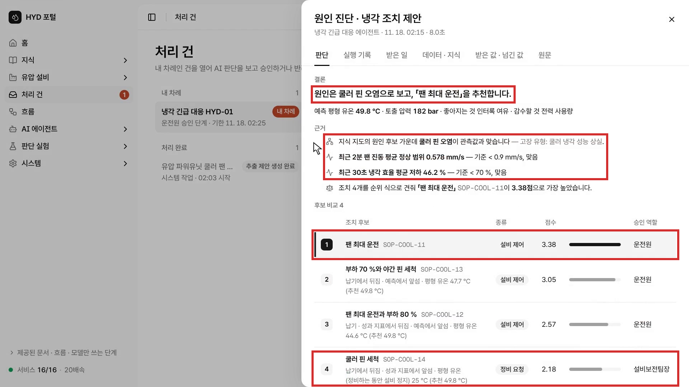
운전원 역할로 승인하기
판 오른쪽 위 ×를 눌러 근거를 닫습니다. 카드 오른쪽 아래 운전원 역할로 기록됩니다는 팬을 돌리는 일은 운전원이 승인한다는 뜻이고, 지금은 내가 그 운전원입니다.
옆의 반려는 승인하지 않고 돌려보내는 단추이고, 다른 안 고르기로는 후보 비교의 다른 조치를 고를 수 있습니다. 이번에는 추천대로 승인을 누르세요.

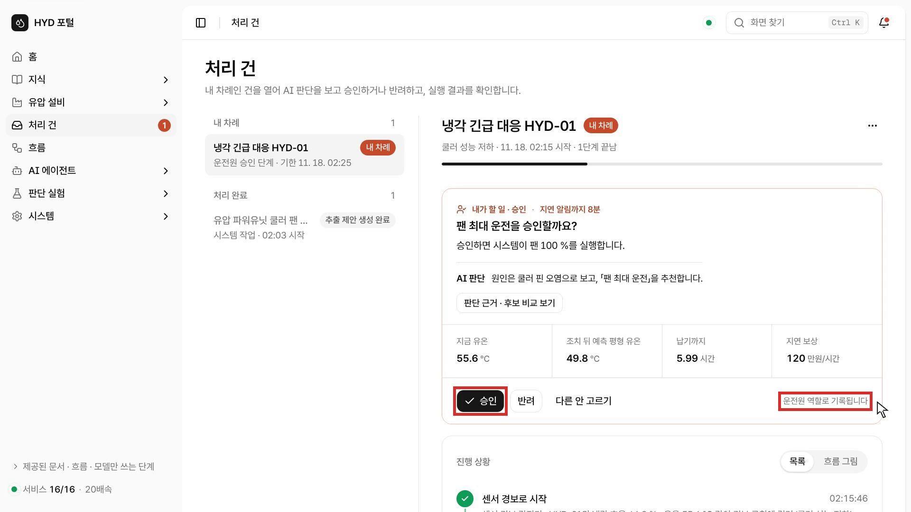
사람이 할 일은 여기까지입니다. 이제 아래 진행 상황에 줄이 하나씩 붙습니다. 냉각 명령 줄은 승인한 조치가 명령이 되어 설비로 갔고, 설비가 실행했다고 답했다는 뜻입니다. 끝의 (안전 연동 통과)는 설비 곁 PLC가 이 명령을 받아들였다는 표시입니다. 그다음 효과 확인은 기름이 정말 식는지 다시 재는 단계입니다. 괄호 안 설비 시간은 실제보다 스무 배 빨리 가는 가상 설비의 시계라(왼쪽 아래 20배속), 설비 시간 15분이 실제로는 1분 안팎입니다.
확인: 운전원 승인 밑에 냉각 명령과 효과 확인이 차례로 붙습니다.

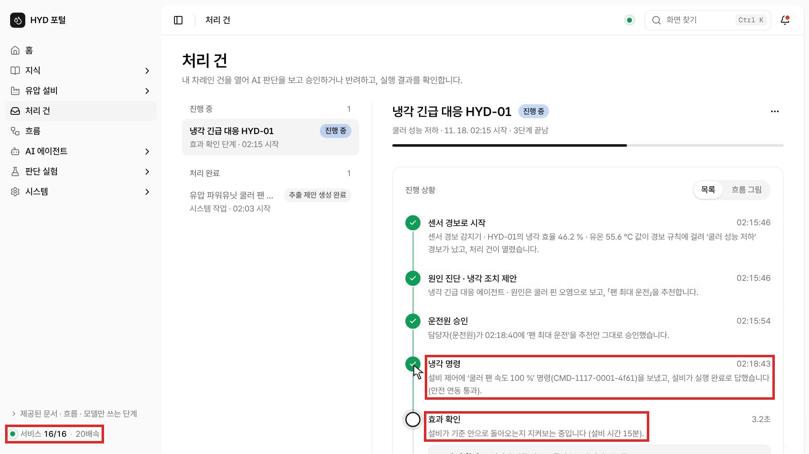
결과와 남은 정비 요청 보기
효과 확인이 끝나면 그 줄이 「… 기준(55 °C 아래) 안이고 경보도 꺼져 회복으로 판정했습니다」로 바뀝니다. 이어서 정비 요청 등록과 결과 보고: 정상이 붙고 이 처리 건이 끝납니다.

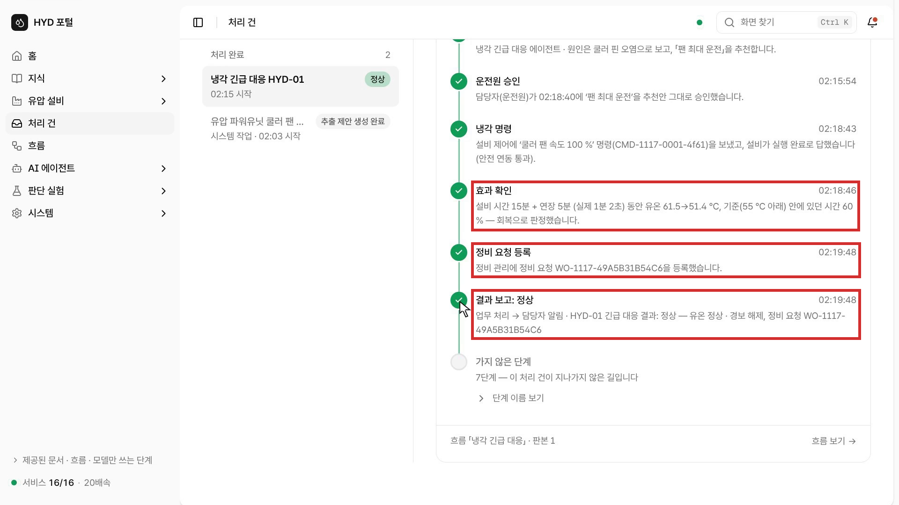
화면 맨 위로 올리면 결과가 올라와 있습니다. 굵은 줄 끝의 정비 요청 WO-…는 팬으로 온도는 잡았지만 쿨러는 아직 손보지 않아서, 사람이 가서 점검하도록 정비 쪽에 맡긴 것입니다.
확인: 결과가 정상이고 경보 해제가 예이며, 굵은 줄 끝에 정비 요청 번호가 있습니다. 번호와 유온 값은 실행마다 다릅니다.

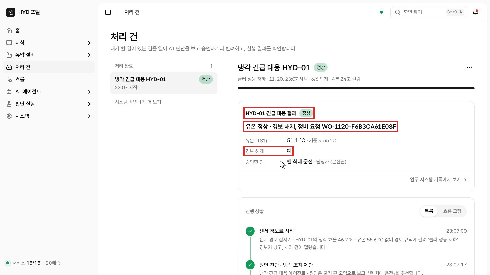
유온은 기준 안인데 경보가 아직 꺼지지 않았으면, 효과 확인을 설비 시간 5분씩 더 지켜본 뒤 판정합니다.
추천 · 승인 · 명령이 따로 남은 것 보기
진행 상황을 위에서부터 봅니다. AI의 추천은 원인 진단 · 냉각 조치 제안 줄에, 사람의 승인은 운전원 승인 줄에, 설비로 간 명령은 냉각 명령 줄에 따로 남아 있습니다. 그래서 나중에 누가 무엇을 정했는지 처음부터 따라가 볼 수 있습니다.
확인: 운전원 승인 줄에 「… 추천안 그대로 승인했습니다.」가 적혀 있습니다.

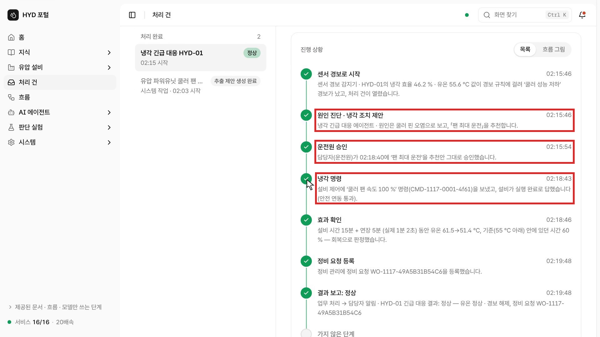
홈으로 돌아와 결과 보기
왼쪽 메뉴 홈을 누르세요. 방금 그 고장 한 건이 맨 위 한 줄대로 처리됐습니다.
확인: 4 결과 보기가 1건 처리 완료입니다. 방금 끝낸 냉각 긴급 대응 한 건입니다.

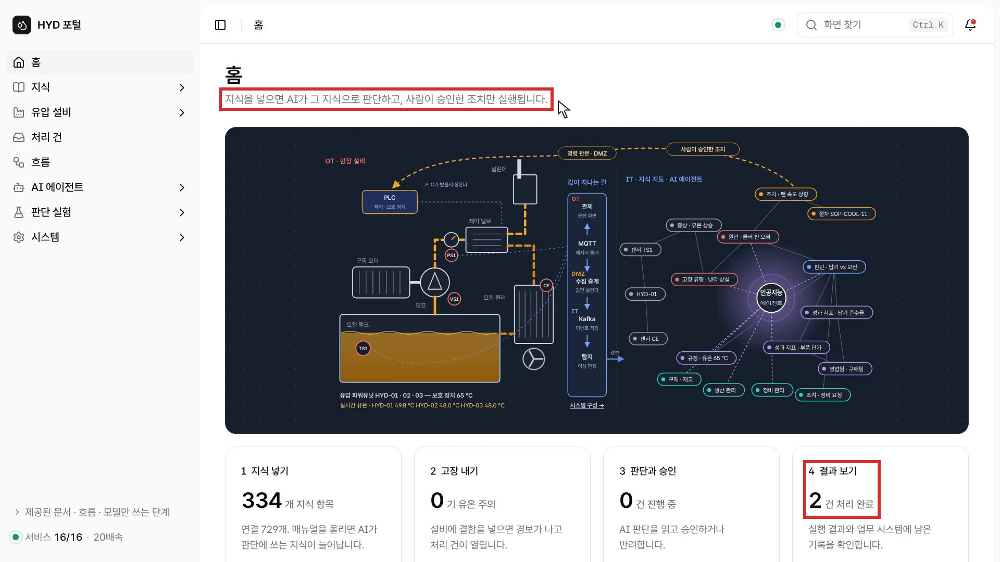
한 번 더 해 보려면 결함 시뮬레이션의 HYD-01 카드 안내(「다시 하려면 [쿨러 복구]를 누르고, 위 상태가 「운전 중」으로 돌아온 뒤 주입하세요.」)대로 쿨러 복구를 누르고, 상태가 운전 중으로 돌아온 뒤 다시 쿨러 열화 주입을 누릅니다.